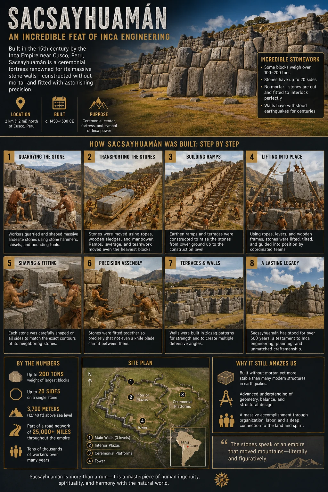
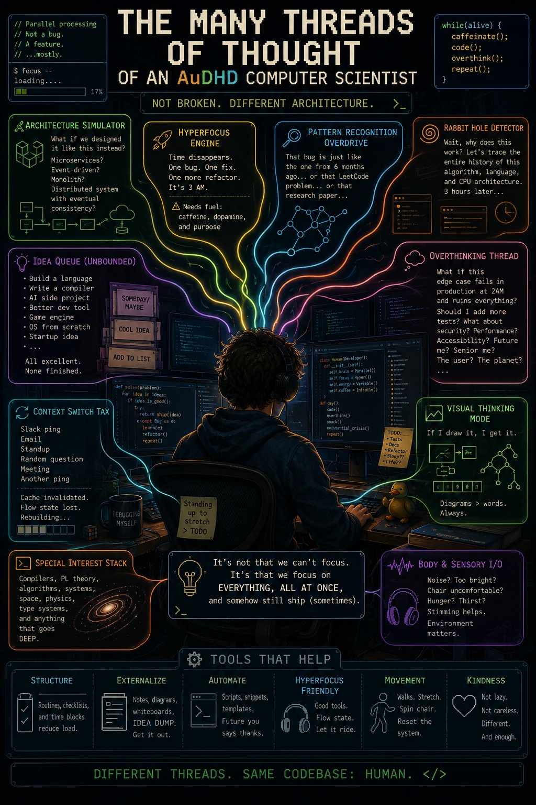
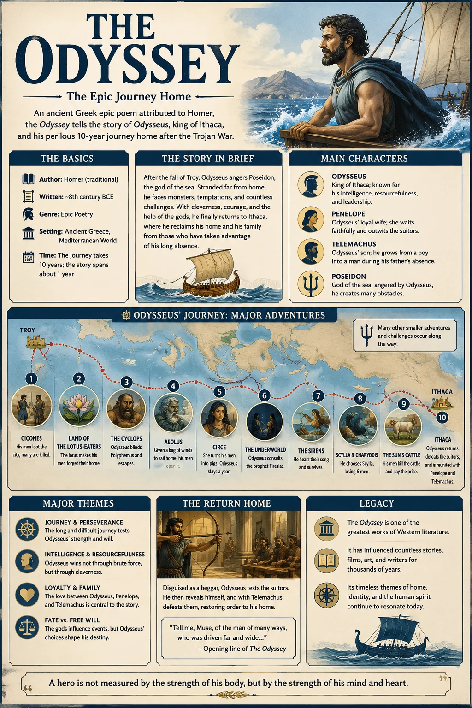
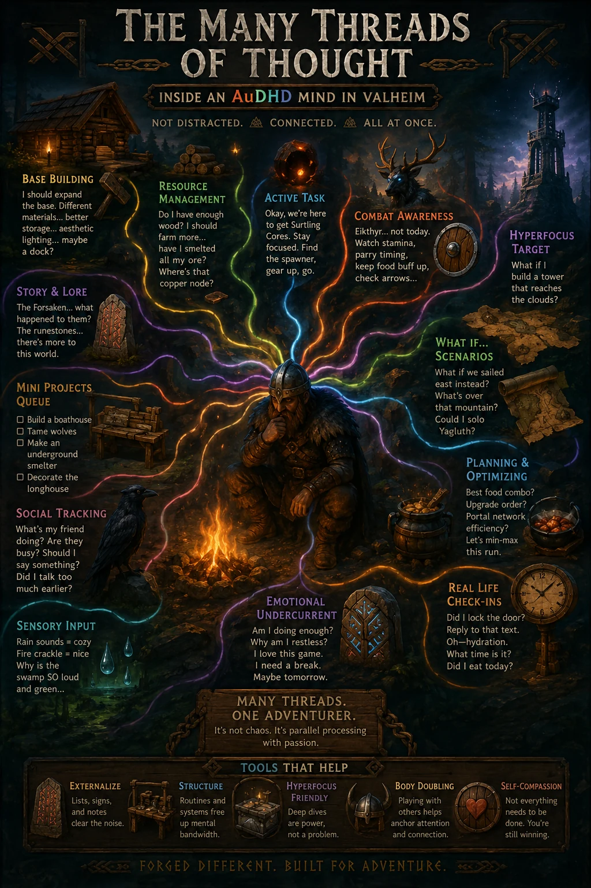
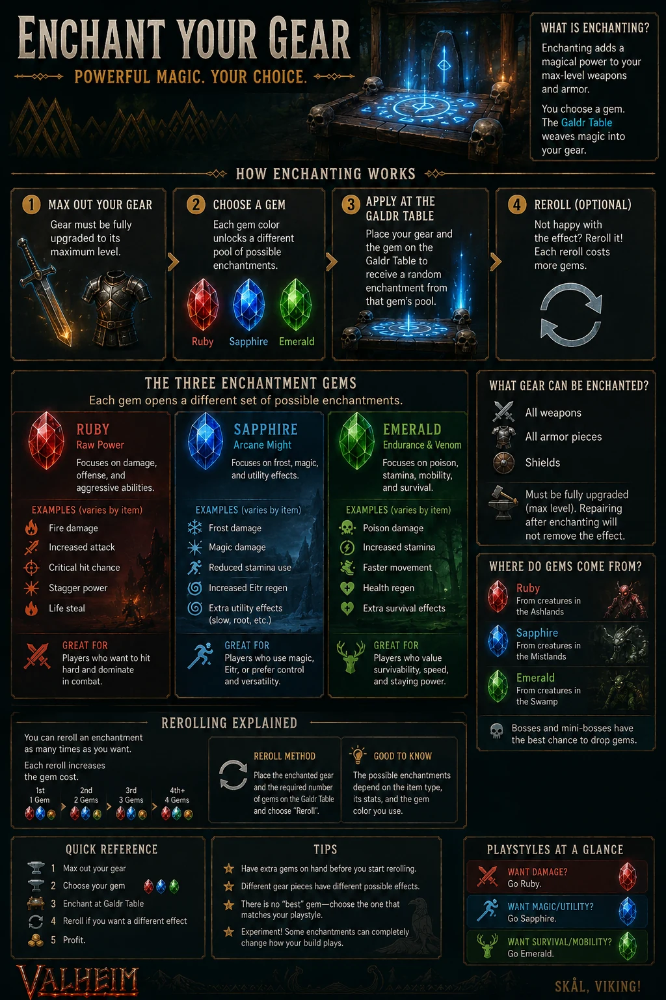

05 selected works / AI-assisted
Ideas you can
look into.
Visual studies shaped through research, iteration, and human judgment—made to turn a complicated subject into an inviting first look.
01 / THE COLLECTION
Curiosity,
given structure.
These pieces explore history, literature, games, and the experience of a many-threaded mind. Each began as a question and became a visual system through prompting, editing, comparison, and selection.
Presented as AI-assisted design studies, not authoritative reference material. Details—especially historical and game-mechanics claims—should be checked against primary sources.




02 / THE PROCESS
AI made the options.
Judgment made the collection.
Twelve unique candidates were reviewed locally for hierarchy, readability, usefulness, visual polish, duplication, and claim risk. Five survived the edit.